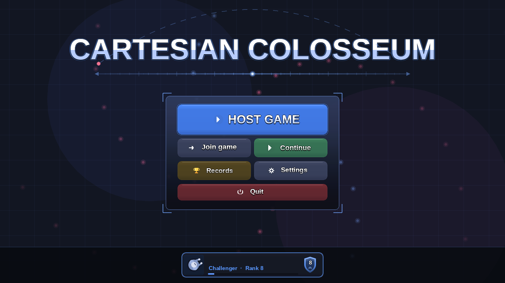
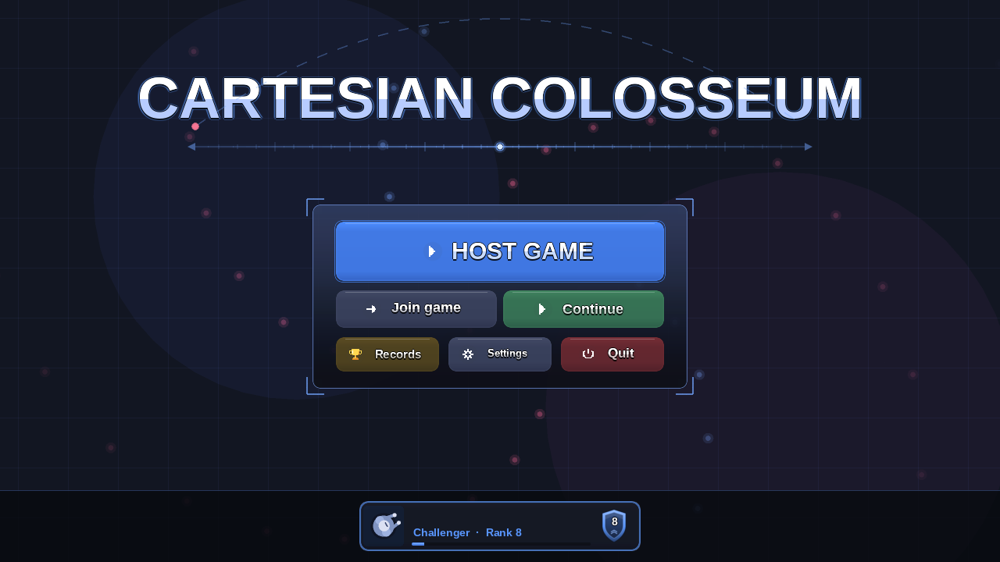
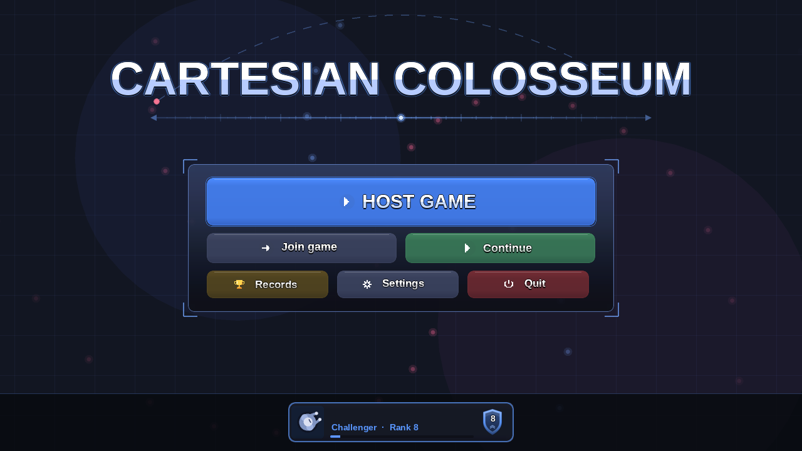

Main Menu Button Layouts
Every button is inside the centre box and your name card is in the middle of the bottom bar. Each picture is a screenshot of the real menu, drawn by the game's own menu code with only the button positions changed, so sizes, colours and the box frame are exactly what you would see. The tip line under the title and your name are not drawn by the screenshot tool. They stay exactly as they are today.
TodayReference
Join game and Continue are in the box under Host game. Records and Settings sit in the middle of the bottom bar, Quit is alone on the right and your name card is on the left.

Option AStacked
Host game, then Join and Continue, then Records and Settings, then Quit across the bottom of the box. The box is the same width as today and about 80 pixels taller.

- Every button is the same size as today's Join and Continue, so the text is full size.
- Quit is a full-width red bar at the foot of the box, the last thing you reach.
- The bottom bar holds only your name card, in the middle.
Option BCompact
Host game, then Join and Continue, then Records, Settings and Quit in a row of three. The box is a little wider than today and only 22 pixels taller.

- The closest to today's look.
- Records, Settings and Quit are shorter buttons, so Settings' text is a little smaller than the rest.
- Quit sits at the end of its row, the same red.
Option CWide
The same three rows in a box 680 pixels wide, so Records, Settings and Quit get full-size buttons in one row.

- All text is full size.
- The box is flat and wide, close to the width of the title.
- Join game's address row still opens under the box.